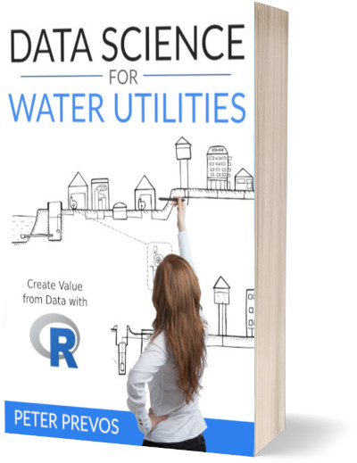

Data Science for Water Professionals - Create Value from Data with the R Language
6 December 2021
Preface

Billions of people still lack access to safe drinking water. Managing precious water resources will also become an ever more critical activity in a warming world for developed countries. The United Nations have defined seventeen sustainable development goals. Goal number six calls for “availability and sustainable management of water and sanitation for all.” Data is an important tool in achieving this goal and making this book freely available is my personal contribution to achieving it.
Managing reliable water services requires not only a sufficient volume of water but also significant amounts of data. Water professionals measure the flow and quality of the water and how customers perceive their service. This book teaches the basics of data science using the R language and the Tidyverse libraries to analyse water management problems.
This book is written for water professionals, but contains sufficient background information to enable readers from other subject areas to understand the context. The more people understand how to use data to solve water problems, the better the chance we have of achieving the sixth development goal.
This book is different to most works on using code to analyse data in that it follows a case-study method. Rather than explaining all details about each function, this book chooses to diagnose practical problems and demonstrates the principles of writing efficient and reproducible code along the way. First, define a problem and then figure out how to solve it, learning the syntax of the R language as you progress.
The case studies in this book are real-life examples of the type of analysis that water professionals undertake: water quality, water consumption and customer perception. The data is mainly simulated and situated in the fictional island nation of Gormsey.
Acknowledgements
This book would not have come to completion without the support from the wonderful people of Water Research Australia. They have embraced teaching water utility professionals the principles of data science and the R language, which resulted in this book.
I would also like to thank my former manager David Sheehan for his support and encouragement while developing the early stages of this book.
Continuous Improvement
This book continuously improves through the feedback from course participants and book readers. Feel free to contact me if you spot an error or like to enhance to text.
If you are a GitHub user, submit a pull request for the book repository. Otherwise, send me a message via my website or contact me through Twitter.